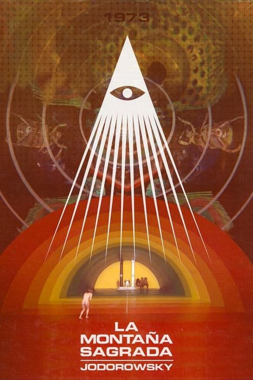

La montaña sagrada (1973)
Sinopsis Rápida
Un viaje alucinante y surrealista a través de extraños rituales místicos y una búsqueda espiritual de la iluminación, guiado por un maestro enigmático que desafía la realidad misma.
Sinopsis Detallada
Alejandro Jodorowsky nos sumerge en un mundo onírico y provocador en 'La montaña sagrada', donde un grupo heterogéneo de individuos, representando los planetas, emprenden una odisea hacia una mítica montaña habitada por inmortales. A través de impactantes imágenes y simbolismos religiosos y existenciales, Jodorowsky cuestiona la naturaleza de la verdad y la búsqueda del conocimiento espiritual. La película es una experiencia sensorial intensa, cargada de surrealismo, violencia simbólica y una crítica mordaz al poder y la religión. Una obra maestra del cine experimental que te dejará sin aliento y con mucho que reflexionar.
¿Por qué tenés que verla?
- Un viaje visualmente impactante que te dejará maravillado y perturbado a partes iguales.
- La dirección única y visionaria de Jodorowsky, creando un mundo onírico e inolvidable.
- Su influencia en el cine independiente y su estatus de película de culto perdurable en el tiempo.
- Una exploración profunda de temas filosóficos y espirituales.
Idea Extra
Análisis del simbolismo en 'La Montaña Sagrada': Descifrando los enigmas ocultos en cada escena.
{{CONTENIDO_RELACIONADO}}